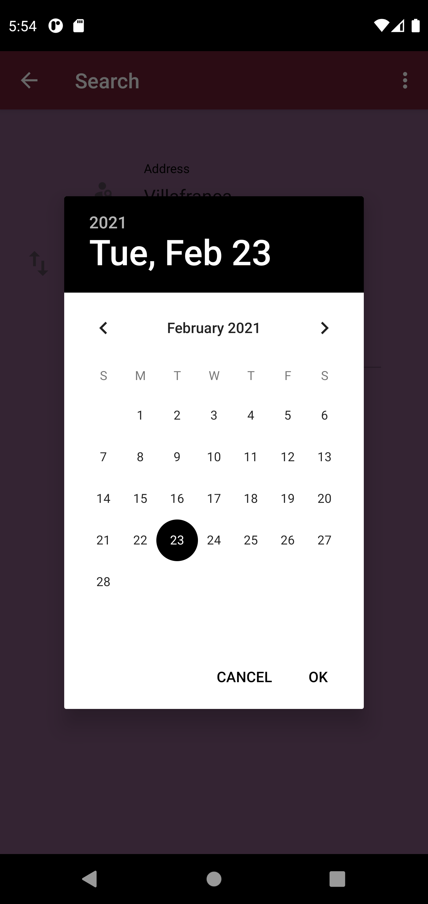
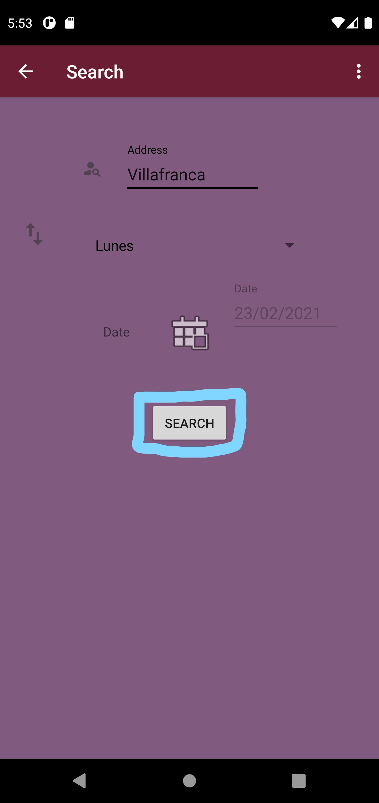

On this screen we can filter users by fields (one or more than one) that you wanted to see.
The filter fileds are:
Note: You only can search if at least one field is filled

If we touch the calendar button, it will open a datepicker to select a date.

Once we filled the fields that we want to filter to, if we press search button we will give us back to list
With the users with the previus criteria.